Publications
Geometry-as-context: Modulating Explicit 3D in
Scene-consistent
Video Generation to Geometry Context
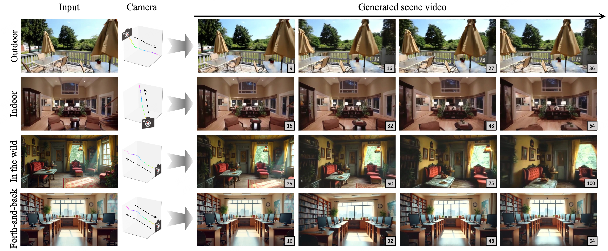

Hierarchical Neural Semantic Representation for 3D Semantic
Correspondence
ACM SIGGRAPH Asia 2025

IP-Prompter: Training-Free Theme-Specific Image Generation
via
Dynamic Visual Prompting
ACM SIGGRAPH 2025
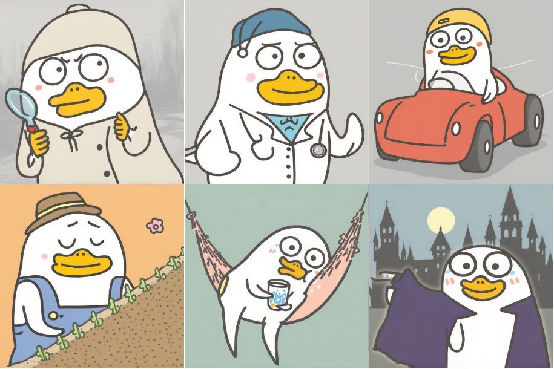
Creative-Agent: A Creative Prototype Generation System Driven
by
Objectives and Key Results
CSCWD 2025
You Only Look Around: Learning Illumination-Invariant Feature
for
Low-light Object Detection
NeurIPS 2024
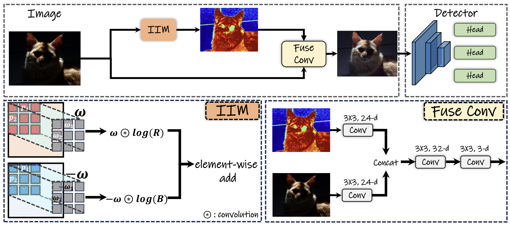
Direct-a-Video: Customized Video Generation with
User-Directed
Camera Movement and Object Motion
SIGGRAPH 2024 (Conference)
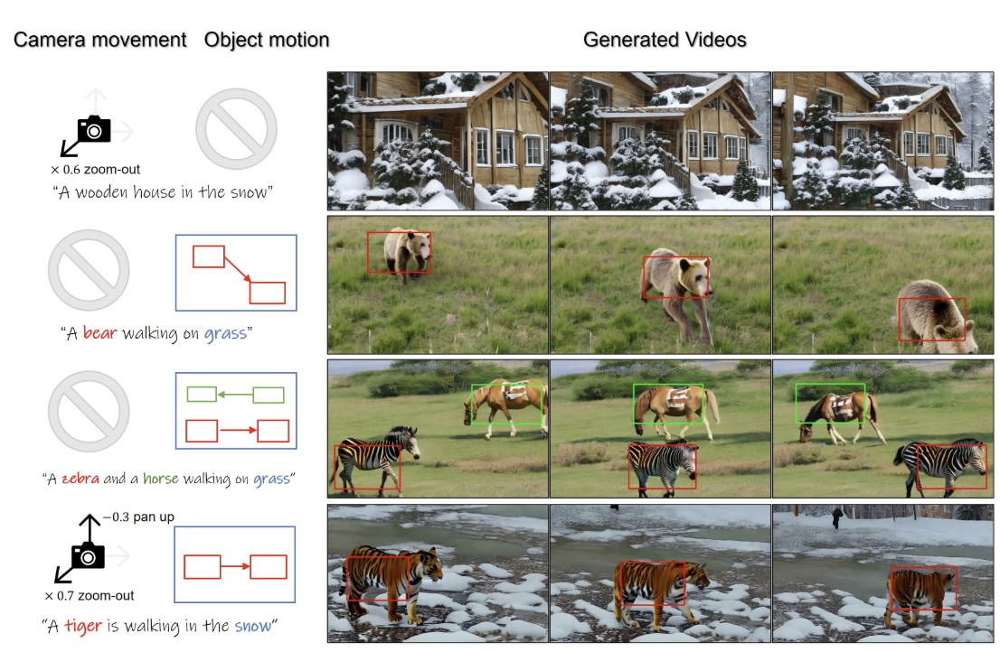
I2V-Adapter: A General Image-to-Video Adapter for Diffusion
Models
SIGGRAPH 2024 (Conference)
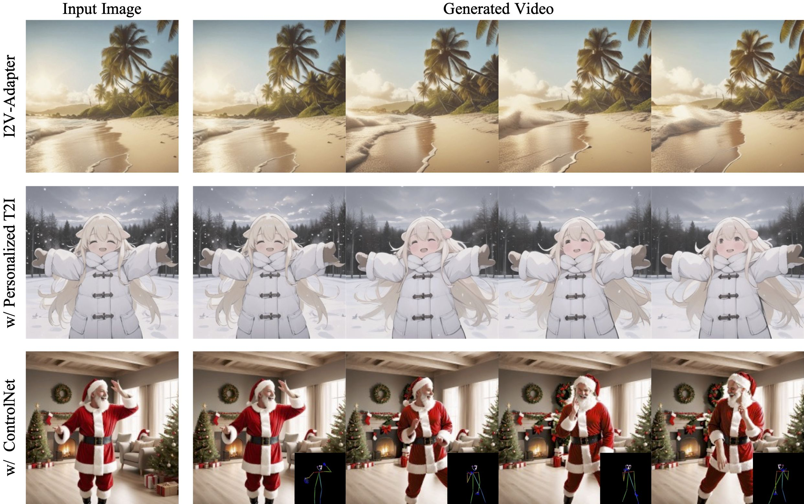
VRMM: A Volumetric Relightable Morphable Head Model
SIGGRAPH 2024 (Conference)

LGTM: Local-to-Global Text-Driven Human Motion Diffusion
Model
SIGGRAPH 2024 (Conference)
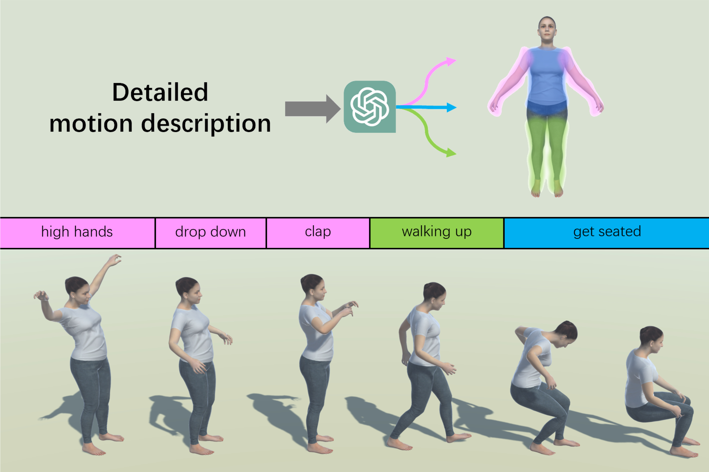
ProSpect: Prompt Spectrum of Staged Diffusion Models for
Visual
Attribute-aware Image Generation
SIGGRAPHASIA 2023
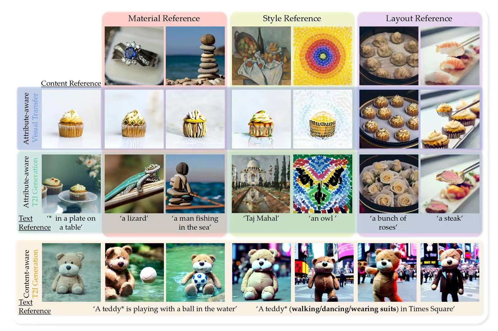
Towards Practical Capture of High-Fidelity Relightable
Avatars
SIGGRAPHASIA 2023 (Conference)
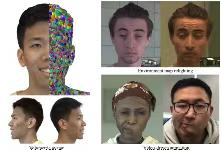
HairStep: Transfer Synthetic to Real Using Strand and Depth
Maps
for Single-View 3D Hair Modeling
CVPR 2023 (Highlight)
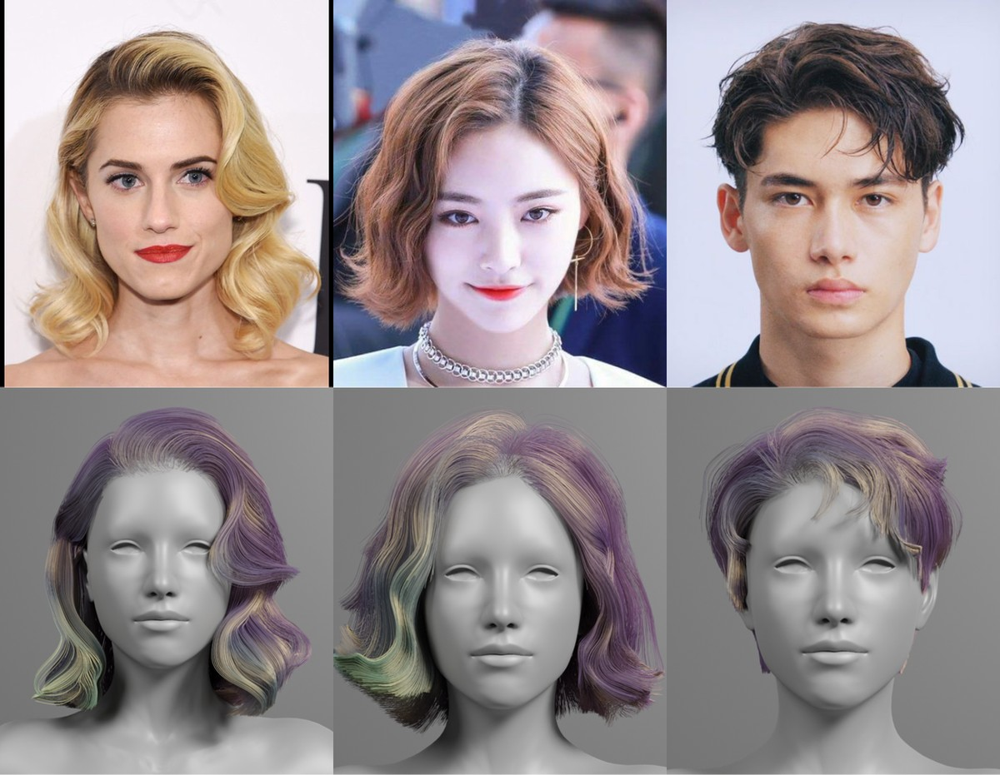
Self-Supervised Category-Level Articulated Object Pose
Estimation
with Part-Level SE(3) Equivariance
ICLR 2023
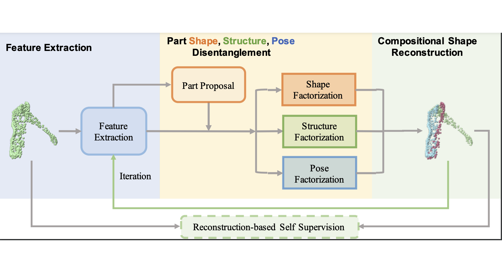
Domain Enhanced Arbitrary Image Style Transfer via
Contrastive
Learning
SIGGRAPH 2022 (Conference)
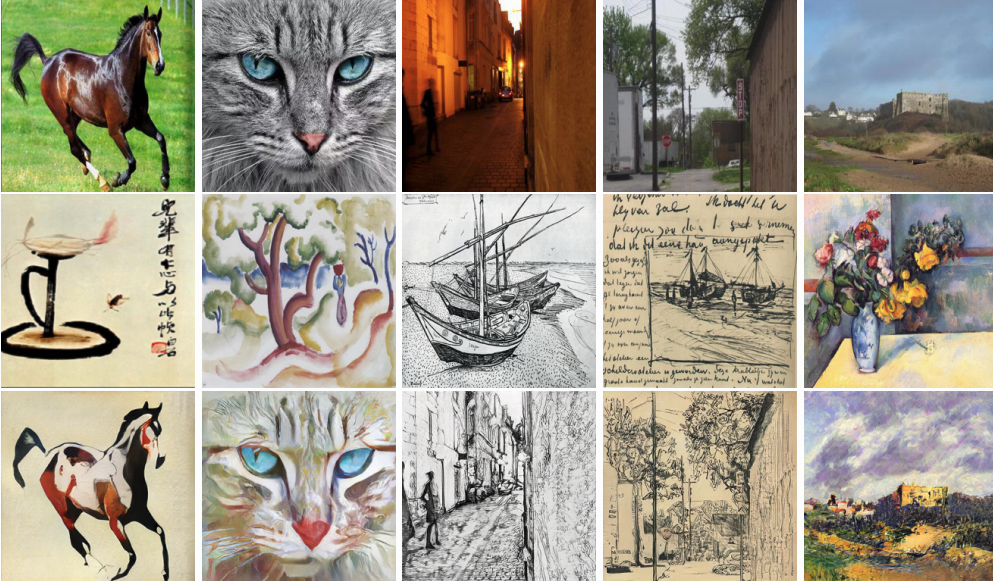
FFB6D: A Full Flow Bidirectional Fusion Network for 6D Pose
Estimation
CVPR 2021 (Oral presentation)
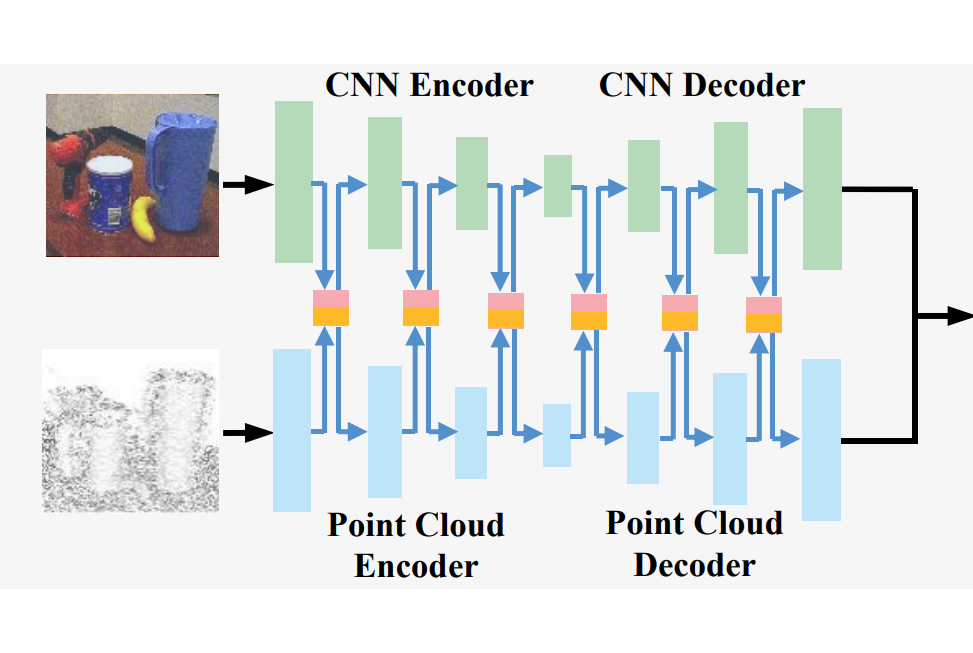
Practical Deep Raw Image Denoising on Mobile Devices
ECCV 2020 (Spotlight presentation)
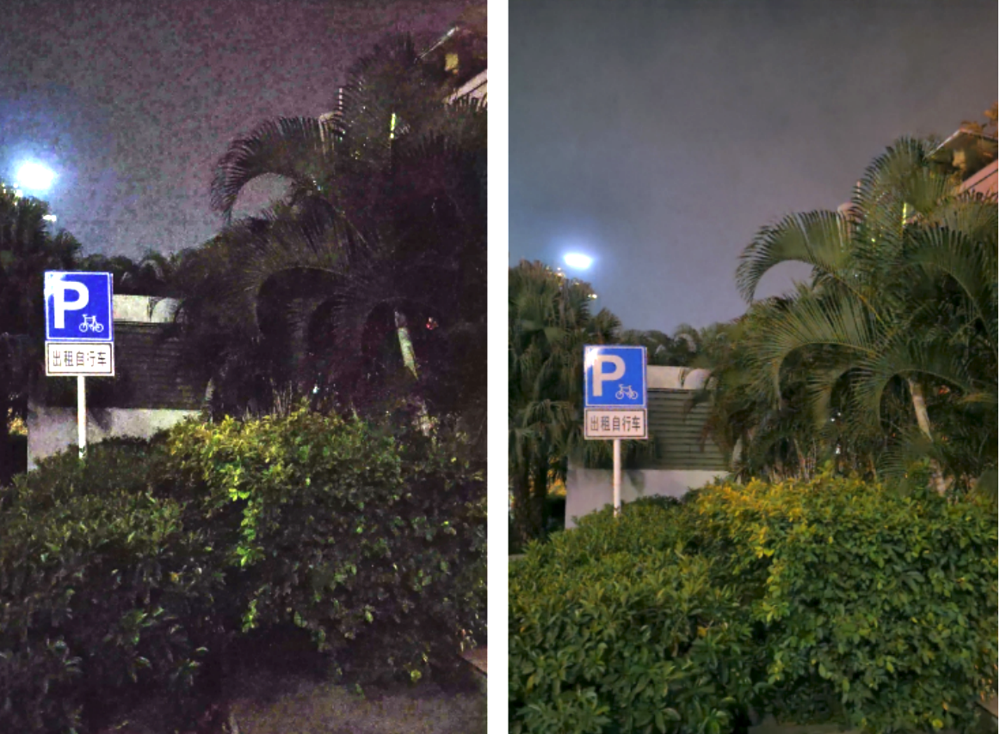
Disentangled Image Matting
ICCV 2019
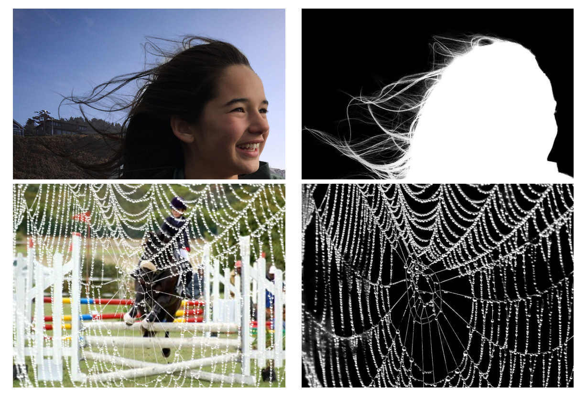
Learning Raw Image Denoising with Bayer Pattern Unification
and
Bayer Preserving Augmentation
CVPRW (NTIRE 2019)
GeoNet: Deep Geodesic Networks for Point Cloud Analysis
CVPR 2019 (Oral presentation)
Gourmet Photography Dataset for Food Image Aesthetic
Assessment
SIGGRAPH Asia 2018 Technical Briefs
Deep Part Induction from Articulated Object Pairs
SIGGRAPH Asia 2018
Global-to-Local Generative Model for 3D Shapes
SIGGRAPH Asia 2018

Learning Local Shape Descriptors from Part Correspondences
With
Multi-view Convolutional Networks
TOG 2018 (also presented at SIGGRAPH 2018)
Learning to Group Discrete Graphical Patterns
SIGGRAPH Asia 2017
High Resolution Shape Completion Using Deep Neural Networks
for
Global Structure and Local Geometry Inference
ICCV 2017 (Spotlight presentation)
Analysis and synthesis of 3D shape families via deep-learned
generative models of surfaces
Computer Graphics Forum (SGP 2015)
Analogy-Driven 3D Style Transfer
Computer Graphics Forum (Eurographics 2014)
Point Sampling with General Noise Spectrum
SIGGRAPH 2012